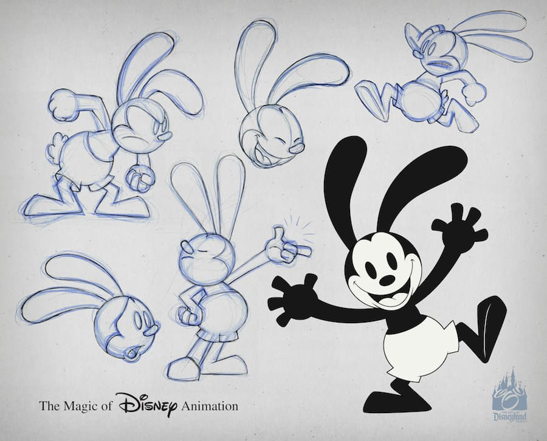

Walt Disney und die erfolgreichste Zeichetrickfigur

Geburt
Walt Disney wurde im Jahr 1901 geboren und wollte schon immer Künstler werden .Er lernte später seinen Freund Ub Iwerks kennen mit ihm produzierte er später seine ersten Kurzfilme und verkaufte sie an Kinos.
Laugh O Gram
Laugh O Gram war der Name einer kleinen Trickfilmserie die Walt Disney damals im Jahr 1922 mit Ub Iwerks gemacht hat.Sie waren 6 bis 10 Minuten minuten lang und waren unterhatsam fürs Publikum und sie wurden damals zu Werbezwecken benutzt. Später als diese Filme beliebter wurden machte Walt sie unabhänig von Werbung und stellte mit ihnen Märchen mit einem modernen Ansatz nach.(Noch ein kleiner Fakt die Serie wird dieses Jahr 100 jahre alt.)

Oswald the lucky Rabbit
Wenn ihr dachtet das Mickey Mouse der erste richtige Disney Charackter war dann habt ihr euch geiert,denn es gab vor Mickey Mouse noch Oswald den glücklichen Hasen welcher technich gesehen der Vorgänger von Mickey war.Und das erkennt man auch wenn man die beiden sieht,denn der einzige richtige Unterschied zwischen den beiden sind die Ohren und die farbe der Hose.
Aber um zu zugeben haben viele Cartoon Characktere so einen Artstile wie man an dem Bild sieht.Aber warum wurde Oswald nie so berühmt wie Mickey obwohl er doch vor ihm exestierte?Der Grund dafür ist das Universal Studios damals Oswald von Disney abgekauft hat,weil sie den Erfolg des Hasen bemerkt haben.Deswegen ist Mickey überhaupt erst erfunden worden
Wenn ihr mehr über die ganzen Cartoon Characktere aus den 20ern erfahren wollt dann schaut euch dieses Video gerne an

Klassiker von Disney
Nachdem Walt mit seinem Studio und den ganzen Mickey Mouse Filmen eine Menge Geld gemacht hat hatte er den Plan etwas grösseres zu machen,deswegen entschied sich Walt einen längeren Film zu machen.Daraufhin erschien 1937 der Film Schneewitchen und die sieben Zwerge und wurde ein Hit ,Glück für Disney denn ansonsten wär das Studio Bankrot gegangen.Walt gewan für diesen Film ganze Acht Oscars einen normalen umringt von sieben kleinen.

Nach dem grossen Erfolg des Films hat Disney noch weitere abendfüllende Filme gemacht wie Bambi,Fantasia,oder auch Dunbo.